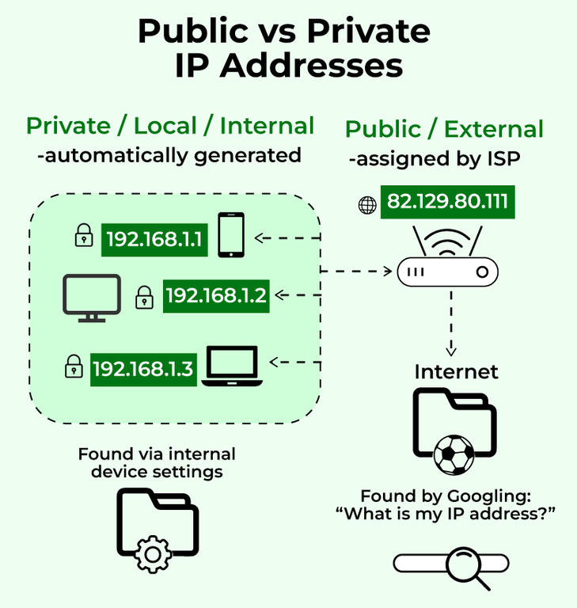
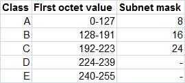
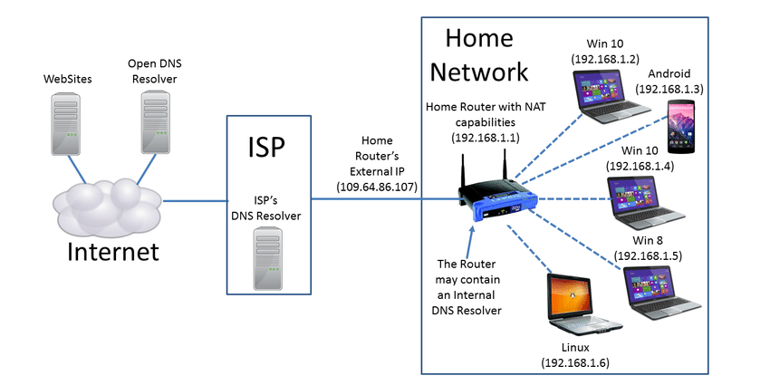
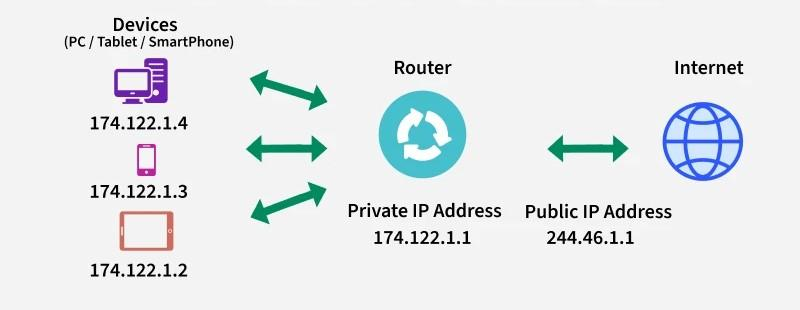

Private vs Public IP Addressing
⭐ CCST GOLD LINE (Remember This!)
Private IP = Used inside a network (not reachable from internet)
Public IP = Used on the internet (globally reachable)
👉 If you remember this → many CCST questions become easy ✅
Private IP = Used inside a network (not reachable from internet)
Public IP = Used on the internet (globally reachable)
👉 If you remember this → many CCST questions become easy ✅
🔢 What is an IP Address? (Quick Recap)
An IP address is a unique number that identifies a device on a network.
🧠 Example: 192.168.1.10
🧠 Example: 192.168.1.10
🏠 What is a Private IP Address?
A private IP address is used inside a local network (LAN) and cannot be accessed directly from the internet.
📌 Assigned by:
- Router (using DHCP)
- Homes
- Offices
- Schools
Private vs Public IP Concept

🔐 Private IP Address Ranges (VERY IMPORTANT)
| Class | Private IP Range |
|---|---|
| Class A | 10.0.0.0 – 10.255.255.255 |
| Class B | 172.16.0.0 – 172.31.255.255 |
| Class C | 192.168.0.0 – 192.168.255.255 |
Classes of IP Addresses

🧠 Easy Example
Laptop IP: 192.168.1.10
Phone IP: 192.168.1.11
👉 Both are private IPs
Laptop IP: 192.168.1.10
Phone IP: 192.168.1.11
👉 Both are private IPs
✅ Advantages of Private IP
- Free to use
- Secure (not internet-reachable)
- Reusable in different networks
- Cannot access internet directly
- Needs NAT to go online
🌍 What is a Public IP Address?
A public IP address is a globally unique address that is reachable on the internet.
📌 Assigned by:
- ISP (Internet Service Provider)
- Websites
- Servers
- Routers facing the internet
🧠 Easy Example
Google server IP: 142.250.182.14
Home router public IP: 103.21.244.0
👉 These are public IPs
Google server IP: 142.250.182.14
Home router public IP: 103.21.244.0
👉 These are public IPs
✅ Advantages of Public IP
- Internet reachable
- Required for hosting websites
- Globally unique
- Limited availability
- Less secure (exposed to internet)
- Usually costs money
🧩 Private vs Public IP (Side-by-Side)
| Feature | Private IP | Public IP |
|---|---|---|
| Scope | Local network | Internet |
| Reachable from internet | ❌ No | ✅ Yes |
| Reusable | ✅ Yes | ❌ No |
| Cost | Free | Paid |
| Example | 192.168.1.10 | 142.250.182.14 |
🔁 What is NAT? (Network Address Translation)
NAT converts private IP addresses into a public IP address so devices can access the internet.
📌 NAT runs on:
- Routers
- Firewalls
🧠 Why NAT is Needed?
• Private IPs cannot go to internet directly
• Public IPs are limited
👉 NAT solves both problems ✅
• Private IPs cannot go to internet directly
• Public IPs are limited
👉 NAT solves both problems ✅
NAT Working (Home Network)

Network Address Translation Diagram

🏠 Real-World NAT Example
Laptop: 192.168.1.10
Phone: 192.168.1.11
Router public IP: 103.21.244.0
👉 Many devices share one public IP
Laptop: 192.168.1.10
Phone: 192.168.1.11
Router public IP: 103.21.244.0
👉 Many devices share one public IP
🧩 Types of NAT (Basic Awareness)
| Type | Meaning |
|---|---|
| Static NAT | One private → one public |
| Dynamic NAT | Private → public from pool |
| PAT (Most common) | Many private → one public (using ports) |
📌 Used in almost all home routers
🛠️ CCST Troubleshooting Scenarios
| Problem | Likely Area |
|---|---|
| Device has IP but no internet | NAT / Router issue |
| Website hosted but not reachable | Public IP / NAT |
| Local devices work, internet fails | NAT misconfiguration |
🧠 Memory Tricks (Exam Gold 🥇)
Private IP = Inside
Public IP = Outside
NAT = Translator
Class C = Home networks
Private IP = Inside
Public IP = Outside
NAT = Translator
Class C = Home networks